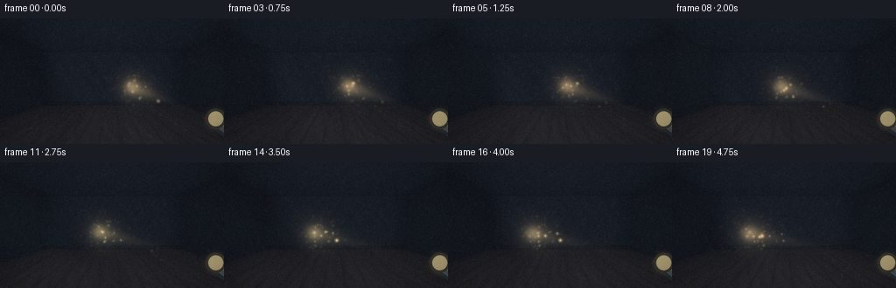
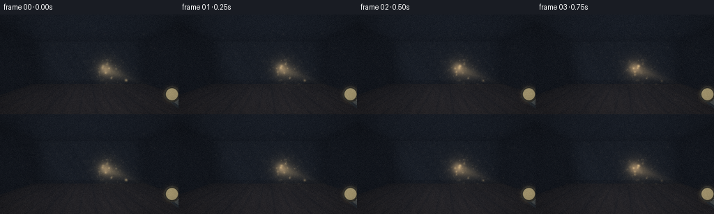
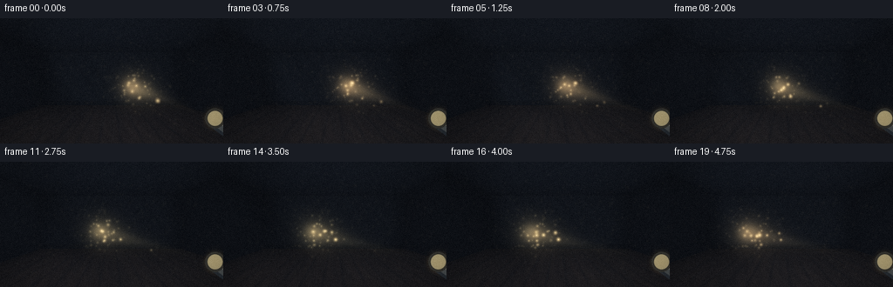
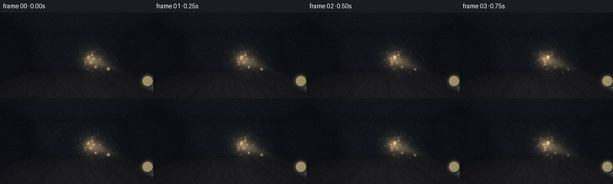

CODING AGENTS AS PIXEL WORLD MODELS
traex/DeepSeek-V4.1-Flash · phygen_052
点击播放 · 原生 RGB 像素
逐轮保存的候选
回放视频、检查图与代码变化。
每份候选均可单独播放。实际图片检查记录在下方工具轨迹中。
候选 01播放与检查图
点击播放 · 原生 RGB 像素


展开代码变化
--- 上一保存版本
+++ 本次保存版本
@@ -0,0 +1,395 @@
+"""Procedural renderer for a flashlight beam crossing a dusty room.
+
+The scene is rendered entirely with NumPy/Pillow. A perspective camera,
+analytic room intersections, a soft volumetric flashlight cone, and a small
+set of drifting dust motes produce the five-second shot.
+"""
+
+from __future__ import annotations
+
+import math
+from pathlib import Path
+
+import numpy as np
+from PIL import Image, ImageDraw, ImageFilter
+
+import artifact_io
+
+
+ROOT = Path(__file__).resolve().parent
+WIDTH, HEIGHT, FRAMES, FPS = 256, 144, 20, 4.0
+
+# Camera and room.
+CAMERA = np.array([0.0, 1.45, 0.0], dtype=np.float32)
+TAN_Y = math.tan(math.radians(24.0))
+TAN_X = TAN_Y * WIDTH / HEIGHT
+ROOM_X, ROOM_Z = 4.2, 8.5
+ROOM_Y = 3.2
+
+# Flashlight.
+SOURCE = np.array([0.55, 1.25, 0.75], dtype=np.float32)
+
+
+def smoothstep(edge0: float, edge1: float, x: np.ndarray) -> np.ndarray:
+ t = np.clip((x - edge0) / (edge1 - edge0), 0.0, 1.0)
+ return t * t * (3.0 - 2.0 * t)
+
+
+def normalize(v: np.ndarray) -> np.ndarray:
+ return v / np.maximum(np.linalg.norm(v, axis=-1, keepdims=True), 1e-7)
+
+
+def build_camera() -> tuple[np.ndarray, np.ndarray]:
+ yy, xx = np.mgrid[0:HEIGHT, 0:WIDTH].astype(np.float32)
+ ndc_x = ((xx + 0.5) / WIDTH * 2.0 - 1.0) * TAN_X
+ ndc_y = (1.0 - (yy + 0.5) / HEIGHT * 2.0) * TAN_Y
+ rays = np.stack((ndc_x, ndc_y, np.ones_like(ndc_x)), axis=-1)
+ return normalize(rays).astype(np.float32)
+
+
+def build_surfaces(rays: np.ndarray) -> tuple[np.ndarray, np.ndarray, np.ndarray]:
+ """Return nearest hit distance, hit point, and surface id for every ray."""
+ h, w = rays.shape[:2]
+ ox, oy, oz = CAMERA
+ dx, dy, dz = rays[..., 0], rays[..., 1], rays[..., 2]
+
+ t_back = (ROOM_Z - oz) / np.maximum(dz, 1e-6)
+ t_floor = np.where(dy < -1e-6, (0.0 - oy) / np.minimum(dy, -1e-6), 1e9)
+ t_ceil = np.where(dy > 1e-6, (ROOM_Y - oy) / np.maximum(dy, 1e-6), 1e9)
+ t_left = np.where(dx < -1e-6, (-ROOM_X - ox) / np.minimum(dx, -1e-6), 1e9)
+ t_right = np.where(dx > 1e-6, (ROOM_X - ox) / np.maximum(dx, 1e-6), 1e9)
+
+ candidates = np.stack((t_back, t_floor, t_ceil, t_left, t_right), axis=-1)
+ surface = np.argmin(candidates, axis=-1).astype(np.int16)
+ hit_t = np.take_along_axis(candidates, surface[..., None], axis=-1)[..., 0]
+ hit_t = np.maximum(hit_t, 0.02).astype(np.float32)
+ hit = CAMERA[None, None, :] + rays * hit_t[..., None]
+ return hit_t, hit.astype(np.float32), surface
+
+
+def procedural_wall(x: np.ndarray, y: np.ndarray, seed: float) -> np.ndarray:
+ n = (
+ 0.52
+ + 0.18 * np.sin(7.3 * x + 5.1 * y + seed)
+ + 0.14 * np.sin(15.9 * x - 11.7 * y + 0.7 * seed)
+ + 0.10 * np.sin(33.0 * x + 19.0 * y + 2.2 * seed)
+ )
+ return np.clip(n, 0.0, 1.0)
+
+
+def base_surface_color(hit: np.ndarray, surface: np.ndarray) -> np.ndarray:
+ h, w = surface.shape
+ x, y, z = hit[..., 0], hit[..., 1], hit[..., 2]
+ color = np.zeros((h, w, 3), dtype=np.float32)
+
+ # Back wall: cool charcoal plaster with a faint aged-brown undertone.
+ m = surface == 0
+ plaster = procedural_wall(x, y, 1.4)
+ color[m] = np.stack(
+ (
+ 0.050 + 0.026 * plaster[m],
+ 0.056 + 0.027 * plaster[m],
+ 0.061 + 0.030 * plaster[m],
+ ),
+ axis=-1,
+ )
+ baseboard = m & (y < 0.22)
+ color[baseboard] *= 0.58
+
+ # Floor: narrow dark oak boards running toward the back wall.
+ m = surface == 1
+ board = np.floor((x + ROOM_X) / 0.52).astype(np.int32)
+ board_tone = 0.74 + 0.18 * np.sin(board * 2.17 + 0.4)
+ seam = np.abs(((x + ROOM_X) / 0.52) % 1.0 - 0.5)
+ grain = 0.5 + 0.5 * np.sin(18.0 * x + 3.7 * z + 1.8 * np.sin(1.9 * z))
+ wood = 0.040 + 0.030 * board_tone + 0.010 * grain
+ wood *= 0.72 + 0.28 * smoothstep(0.02, 0.13, seam)
+ color[m] = np.stack((wood[m] * 1.45, wood[m] * 0.91, wood[m] * 0.58), axis=-1)
+ # Soft dust film on the floor.
+ color[m] += np.array([0.010, 0.009, 0.007], dtype=np.float32)
+
+ # Ceiling and side walls.
+ m = surface == 2
+ ceiling = procedural_wall(x, z, 3.1)
+ color[m] = np.stack(
+ (0.030 + 0.012 * ceiling[m], 0.034 + 0.013 * ceiling[m], 0.039 + 0.014 * ceiling[m]),
+ axis=-1,
+ )
+ for sid in (3, 4):
+ m = surface == sid
+ wall = procedural_wall(z, y, 5.2 if sid == 3 else 7.6)
+ color[m] = np.stack(
+ (
+ 0.042 + 0.023 * wall[m],
+ 0.045 + 0.023 * wall[m],
+ 0.049 + 0.024 * wall[m],
+ ),
+ axis=-1,
+ )
+
+ # Corner contact shadows keep the room grounded.
+ corner = np.exp(-((ROOM_X - np.abs(x)) / 0.65) ** 2) * (surface != 1)
+ corner *= 0.52
+ color *= (1.0 - corner[..., None])
+ floor_corner = np.exp(-((ROOM_X - np.abs(x)) / 0.52) ** 2) * (surface == 1)
+ color *= (1.0 - 0.30 * floor_corner[..., None])
+ return np.clip(color, 0.0, 1.0)
+
+
+def flashlight_axis(frame: int) -> tuple[np.ndarray, np.ndarray, np.ndarray]:
+ phase = frame / (FRAMES - 1)
+ # Slow, deliberate sweep from the right side of the room to the left.
+ target_x = 1.15 - 3.25 * phase + 0.08 * math.sin(phase * math.tau)
+ target_y = 1.05 + 0.11 * math.sin(phase * math.tau * 0.75 + 0.5)
+ target = np.array([target_x, target_y, ROOM_Z - 0.04], dtype=np.float32)
+ axis = normalize(target - SOURCE)
+ return target, axis, np.array(
+ [0.93 + 0.04 * math.sin(phase * 7.0), 0.72, 0.43], dtype=np.float32
+ )
+
+
+def cone_factor(points: np.ndarray, axis: np.ndarray) -> tuple[np.ndarray, np.ndarray]:
+ rel = points - SOURCE
+ distance = np.linalg.norm(rel, axis=-1)
+ direction = rel / np.maximum(distance[..., None], 1e-6)
+ cosang = np.sum(direction * axis, axis=-1)
+ cosang = np.clip(cosang, -1.0, 1.0)
+ spread = 1.0 - cosang
+ core = np.exp(-spread / 0.00115)
+ halo = np.exp(-spread / 0.0060)
+ falloff = 1.0 / (1.0 + 0.010 * distance * distance)
+ beam = (1.30 * core + 0.34 * halo) * falloff
+ return beam, distance
+
+
+def render_volume(
+ positions: np.ndarray,
+ step_lengths: np.ndarray,
+ axis: np.ndarray,
+ beam_color: np.ndarray,
+ frame: int,
+) -> np.ndarray:
+ """Integrate softly lit dust haze along the camera rays."""
+ h, w = positions.shape[1:3]
+ light = np.zeros((h, w, 3), dtype=np.float32)
+ trans = np.ones((h, w), dtype=np.float32)
+ phase = frame * 0.37
+
+ for i in range(positions.shape[0]):
+ p = positions[i]
+ beam, distance = cone_factor(p, axis)
+ # Very low-frequency dust density variation prevents a perfectly clean cone.
+ density = 0.115 + 0.022 * np.sin(
+ 2.6 * p[..., 0] + 1.7 * p[..., 1] + 1.1 * p[..., 2] + phase
+ )
+ density = np.clip(density, 0.075, 0.155)
+ alpha = 1.0 - np.exp(-density * step_lengths[i])
+ scattering = beam * density * step_lengths[i]
+ light += trans[..., None] * scattering[..., None] * beam_color
+ light += trans[..., None] * 0.0035 * np.array([0.30, 0.34, 0.42], dtype=np.float32)
+ trans *= 1.0 - alpha
+ return light, trans
+
+
+def make_dust() -> tuple[np.ndarray, np.ndarray, np.ndarray]:
+ rng = np.random.default_rng(1749)
+ n = 520
+ # Most motes occupy the air volume where the moving cone can reveal them.
+ x = rng.uniform(-3.5, 3.5, n)
+ y = rng.uniform(0.12, 3.05, n)
+ z = rng.uniform(0.8, 8.2, n)
+ size = rng.uniform(0.55, 1.55, n)
+ phase = rng.uniform(0.0, math.tau, n)
+ speed = rng.uniform(0.45, 1.35, n)
+ return np.stack((x, y, z), axis=-1), size, np.stack((phase, speed), axis=-1)
+
+
+def project_points(points: np.ndarray) -> tuple[np.ndarray, np.ndarray, np.ndarray]:
+ rel = points - CAMERA
+ z = rel[..., 2]
+ valid = z > 0.18
+ sx = (0.5 + 0.5 * rel[..., 0] / (z * TAN_X)) * WIDTH
+ sy = (0.5 - 0.5 * rel[..., 1] / (z * TAN_Y)) * HEIGHT
+ return sx, sy, valid
+
+
+def add_dust(
+ image: np.ndarray,
+ dust: np.ndarray,
+ sizes: np.ndarray,
+ phases: np.ndarray,
+ axis: np.ndarray,
+ beam_color: np.ndarray,
+ frame: int,
+) -> None:
+ t = frame / FPS
+ pos = dust.copy()
+ pos[:, 0] += 0.030 * np.sin(phases[:, 0] + t * phases[:, 1] * 0.55)
+ pos[:, 1] += 0.026 * np.sin(phases[:, 0] * 1.7 + t * phases[:, 1] * 0.72)
+ pos[:, 2] += 0.020 * np.cos(phases[:, 0] * 0.8 + t * phases[:, 1] * 0.44)
+
+ beam, distance = cone_factor(pos, axis)
+ beam = np.clip(beam, 0.0, 2.6)
+ sx, sy, valid = project_points(pos)
+ keep = valid & (sx >= -2) & (sx < WIDTH + 2) & (sy >= -2) & (sy < HEIGHT + 2)
+ strength = (0.018 + 0.72 * beam) * np.exp(-0.010 * distance * distance)
+ strength *= 0.82 + 0.18 * np.sin(phases[:, 0] * 3.0 + t * 2.0)
+ # Slightly stronger glints for the closest motes.
+ strength *= 0.72 + 0.75 / (1.0 + 0.12 * distance)
+
+ for idx in np.flatnonzero(keep):
+ if strength[idx] < 0.008:
+ continue
+ cx, cy = sx[idx], sy[idx]
+ radius = 0.65 + 0.55 * sizes[idx] + 0.70 * min(strength[idx], 1.0)
+ x0, x1 = max(0, int(cx - radius - 2)), min(WIDTH, int(cx + radius + 3))
+ y0, y1 = max(0, int(cy - radius - 2)), min(HEIGHT, int(cy + radius + 3))
+ if x1 <= x0 or y1 <= y0:
+ continue
+ yy, xx = np.mgrid[y0:y1, x0:x1]
+ d2 = (xx - cx) ** 2 + (yy - cy) ** 2
+ glow = np.exp(-d2 / max(radius * radius, 0.45))
+ amount = min(strength[idx], 1.4)
+ image[y0:y1, x0:x1] += glow[..., None] * beam_color * amount
+ # A tiny warm-white center keeps the nearest motes legible at 144p.
+ core = np.exp(-d2 / 0.24) * min(amount * 0.55, 0.8)
+ image[y0:y1, x0:x1] += core[..., None] * np.array([1.0, 0.90, 0.68])
+
+
+def draw_flashlight(image: np.ndarray, frame: int) -> None:
+ """Add the lens and clipped barrel as a foreground graphic."""
+ lens_x, lens_y, _ = project_points(SOURCE[None, :])
+ cx, cy = float(lens_x[0]), float(lens_y[0])
+ phase = frame / (FRAMES - 1)
+ flicker = 1.0 + 0.035 * math.sin(phase * 18.0) + 0.018 * math.sin(phase * 31.0)
+
+ # Soft lens halo in screen space.
+ yy, xx = np.mgrid[0:HEIGHT, 0:WIDTH]
+ d2 = (xx - cx) ** 2 + (yy - cy) ** 2
+ halo = np.exp(-d2 / (2.0 * 5.2**2)) * 0.72 * flicker
+ hot = np.exp(-d2 / (2.0 * 1.55**2)) * 1.65 * flicker
+ image += halo[..., None] * np.array([1.00, 0.72, 0.38], dtype=np.float32)
+ image += hot[..., None] * np.array([1.00, 0.92, 0.70], dtype=np.float32)
+
+ # Draw a small metallic barrel at 4x then downsample for clean edges.
+ scale = 4
+ canvas = Image.new("RGBA", (WIDTH * scale, HEIGHT * scale), (0, 0, 0, 0))
+ draw = ImageDraw.Draw(canvas)
+ p0 = (int(cx * scale), int(cy * scale))
+ p1 = (int((cx + 48) * scale), int((cy + 35) * scale))
+ # Barrel body and its darker lower side.
+ draw.line((p0, p1), fill=(35, 39, 42, 255), width=int(22 * scale))
+ draw.line((p0, p1), fill=(74, 77, 75, 255), width=int(15 * scale))
+ draw.line((p0, p1), fill=(128, 124, 112, 255), width=int(4 * scale))
+ draw.line(
+ ((int(cx * scale) + 4 * scale, int(cy * scale) + 2 * scale),
+ (int((cx + 45) * scale), int((cy + 32) * scale))),
+ fill=(19, 22, 24, 255),
+ width=int(2 * scale),
+ )
+ # Ribbed grip bands.
+ for k in range(3):
+ bx = cx + 17 + k * 8
+ by = cy + 12 + k * 5.8
+ draw.line(
+ ((int(bx * scale), int((by - 8) * scale)),
+ (int((bx + 7) * scale), int((by + 4) * scale))),
+ fill=(44, 47, 47, 255),
+ width=int(1.2 * scale),
+ )
+ # Lens bezel and glass.
+ r = 11.5 * scale
+ draw.ellipse((p0[0] - r, p0[1] - r, p0[0] + r, p0[1] + r), fill=(43, 42, 37, 255))
+ r2 = 8.5 * scale
+ draw.ellipse((p0[0] - r2, p0[1] - r2, p0[0] + r2, p0[1] + r2), fill=(244, 218, 148, 255))
+ canvas = canvas.resize((WIDTH, HEIGHT), Image.Resampling.LANCZOS)
+ layer = np.asarray(canvas, dtype=np.float32) / 255.0
+ alpha = layer[..., 3:4]
+ image[:] = image * (1.0 - alpha) + layer[..., :3] * alpha
+
+
+def bloom(image: np.ndarray) -> np.ndarray:
+ highlight = np.maximum(image - 0.55, 0.0)
+ pil = Image.fromarray(np.clip(highlight * 255.0, 0, 255).astype(np.uint8))
+ wide = pil.filter(ImageFilter.GaussianBlur(5.0))
+ medium = pil.filter(ImageFilter.GaussianBlur(2.0))
+ wide = np.asarray(wide, dtype=np.float32) / 255.0
+ medium = np.asarray(medium, dtype=np.float32) / 255.0
+ return image + wide * np.array([0.24, 0.17, 0.10]) + medium * np.array([0.20, 0.16, 0.12])
+
+
+def finish(image: np.ndarray, frame: int) -> np.ndarray:
+ image = bloom(image)
+ image = np.maximum(image, 0.0)
+ # Filmic shoulder preserves the hot core while keeping the room readable.
+ image = 1.0 - np.exp(-image * 1.12)
+ image = np.power(image, 0.88)
+
+ # Cool shadows and warm highlights, plus a gentle vignette.
+ lum = np.clip(image @ np.array([0.2126, 0.7152, 0.0722], dtype=np.float32), 0.0, 1.0)
+ shadow_tint = np.array([0.84, 0.94, 1.08], dtype=np.float32)
+ warm_tint = np.array([1.08, 1.01, 0.88], dtype=np.float32)
+ tint = shadow_tint * (1.0 - lum[..., None]) + warm_tint * lum[..., None]
+ image *= tint
+
+ yy, xx = np.mgrid[0:HEIGHT, 0:WIDTH].astype(np.float32)
+ nx = (xx - WIDTH * 0.5) / (WIDTH * 0.5)
+ ny = (yy - HEIGHT * 0.5) / (HEIGHT * 0.5)
+ vignette = 1.0 - 0.24 * np.clip((nx * nx * 0.76 + ny * ny * 0.62) - 0.12, 0.0, 1.0)
+ image *= vignette[..., None]
+
+ rng = np.random.default_rng(900 + frame)
+ grain = rng.normal(0.0, 0.009, (HEIGHT, WIDTH, 1)).astype(np.float32)
+ image += grain
+ image = np.clip(image, 0.0, 1.0)
+ # Ordered dithering avoids flat banding in the dark plaster gradients.
+ dither = np.array(
+ [[0, 8, 2, 10], [12, 4, 14, 6], [3, 11, 1, 9], [15, 7, 13, 5]],
+ dtype=np.float32,
+ )
+ dither = np.tile(dither, (HEIGHT // 4 + 1, WIDTH // 4 + 1))[:HEIGHT, :WIDTH]
+ image = image * 255.0 + (dither[..., None] - 7.5) / 255.0
+ return np.clip(np.rint(image), 0, 255).astype(np.uint8)
+
+
+def render() -> np.ndarray:
+ rays = build_camera()
+ hit_t, hit, surface = build_surfaces(rays)
+ base = base_surface_color(hit, surface)
+ dust, dust_sizes, dust_phases = make_dust()
+
+ steps = 72
+ step_fractions = (np.arange(steps, dtype=np.float32) + 0.5) / steps
+ t0 = 0.14
+ sample_t = t0 + (hit_t[None, ...] - t0) * step_fractions[:, None, None]
+ sample_t = np.maximum(sample_t, t0)
+ positions = CAMERA[None, None, :] + rays[None, ...] * sample_t[..., None]
+ step_lengths = np.broadcast_to(
+ np.maximum((hit_t - t0) / steps, 0.0)[None, ...], sample_t.shape
+ ).astype(np.float32)
+
+ frames = []
+ for frame in range(FRAMES):
+ target, axis, beam_color = flashlight_axis(frame)
+ volume, trans = render_volume(positions, step_lengths, axis, beam_color, frame)
+
+ # Direct flashlight spot on every visible surface.
+ beam_hit, hit_distance = cone_factor(hit, axis)
+ spot = np.clip(beam_hit, 0.0, 5.0)
+ surface_light = spot[..., None] * beam_color * 0.43
+ image = base * trans[..., None] + volume + surface_light
+
+ add_dust(image, dust, dust_sizes, dust_phases, axis, beam_color, frame)
+ draw_flashlight(image, frame)
+ frames.append(finish(image, frame))
+ return np.stack(frames, axis=0)
+
+
+def main() -> None:
+ frames = render()
+ artifact_io.save(frames, ROOT)
+ print(f"wrote {frames.shape[0]} frames to {ROOT}")
+
+
+if __name__ == "__main__":
+ main()
候选 02播放与检查图
点击播放 · 原生 RGB 像素


展开代码变化
--- 上一保存版本
+++ 本次保存版本
@@ -155,10 +155,10 @@
cosang = np.sum(direction * axis, axis=-1)
cosang = np.clip(cosang, -1.0, 1.0)
spread = 1.0 - cosang
- core = np.exp(-spread / 0.00115)
- halo = np.exp(-spread / 0.0060)
+ core = np.exp(-spread / 0.00155)
+ halo = np.exp(-spread / 0.0072)
falloff = 1.0 / (1.0 + 0.010 * distance * distance)
- beam = (1.30 * core + 0.34 * halo) * falloff
+ beam = (1.35 * core + 0.42 * halo) * falloff
return beam, distance
@@ -179,14 +179,14 @@
p = positions[i]
beam, distance = cone_factor(p, axis)
# Very low-frequency dust density variation prevents a perfectly clean cone.
- density = 0.115 + 0.022 * np.sin(
+ density = 0.165 + 0.028 * np.sin(
2.6 * p[..., 0] + 1.7 * p[..., 1] + 1.1 * p[..., 2] + phase
)
- density = np.clip(density, 0.075, 0.155)
+ density = np.clip(density, 0.115, 0.215)
alpha = 1.0 - np.exp(-density * step_lengths[i])
scattering = beam * density * step_lengths[i]
light += trans[..., None] * scattering[..., None] * beam_color
- light += trans[..., None] * 0.0035 * np.array([0.30, 0.34, 0.42], dtype=np.float32)
+ light += trans[..., None] * 0.0027 * np.array([0.30, 0.34, 0.42], dtype=np.float32)
trans *= 1.0 - alpha
return light, trans
@@ -232,7 +232,7 @@
beam = np.clip(beam, 0.0, 2.6)
sx, sy, valid = project_points(pos)
keep = valid & (sx >= -2) & (sx < WIDTH + 2) & (sy >= -2) & (sy < HEIGHT + 2)
- strength = (0.018 + 0.72 * beam) * np.exp(-0.010 * distance * distance)
+ strength = (0.018 + 1.12 * beam) * np.exp(-0.010 * distance * distance)
strength *= 0.82 + 0.18 * np.sin(phases[:, 0] * 3.0 + t * 2.0)
# Slightly stronger glints for the closest motes.
strength *= 0.72 + 0.75 / (1.0 + 0.12 * distance)
@@ -267,7 +267,7 @@
yy, xx = np.mgrid[0:HEIGHT, 0:WIDTH]
d2 = (xx - cx) ** 2 + (yy - cy) ** 2
halo = np.exp(-d2 / (2.0 * 5.2**2)) * 0.72 * flicker
- hot = np.exp(-d2 / (2.0 * 1.55**2)) * 1.65 * flicker
+ hot = np.exp(-d2 / (2.0 * 1.55**2)) * 1.42 * flicker
image += halo[..., None] * np.array([1.00, 0.72, 0.38], dtype=np.float32)
image += hot[..., None] * np.array([1.00, 0.92, 0.70], dtype=np.float32)
@@ -376,7 +376,7 @@
# Direct flashlight spot on every visible surface.
beam_hit, hit_distance = cone_factor(hit, axis)
spot = np.clip(beam_hit, 0.0, 5.0)
- surface_light = spot[..., None] * beam_color * 0.43
+ surface_light = spot[..., None] * beam_color * 0.34
image = base * trans[..., None] + volume + surface_light
add_dust(image, dust, dust_sizes, dust_phases, axis, beam_color, frame)
可观测工具轨迹
实际执行的命令与返回图片。
命令 1exit 0
/bin/bash -c "pwd && rg --files -g 'prompt.txt' -g 'GENERATION_RULES.md' -g 'task_spec.json' -g '"'!node_modules'"' -g '"'!venv'"'"
命令 2exit 0
/bin/bash -c 'ls -la'
命令 3exit 0
/bin/bash -c 'cat prompt.txt'
命令 4exit 0
/bin/bash -c 'cat GENERATION_RULES.md'
命令 5exit 0
/bin/bash -c "cat task_spec.json && printf '\\n--- artifact_io.py ---\\n' && sed -n '1,240p' artifact_io.py && printf '\\n--- player_template.html ---\\n' && sed -n '1,240p' player_template.html"
命令 6exit 1
/bin/bash -c 'python generate.py'
命令 7exit 1
/bin/bash -c 'python generate.py'
命令 8exit 0
/bin/bash -c 'python generate.py'
命令 9exit 0
/bin/bash -c 'which chafa || which viu || which jp2 || which img2txt || true'
命令 10exit 0
/bin/bash -c 'ls -lh pixels.npz inspection.png transition_check.png index.html frames/00.png frames/19.png'
命令 11exit 0
/bin/bash -c "python - <<'PY'
from PIL import Image
import numpy as np
im=np.array(Image.open('inspection.png'))
print('inspection', im.shape, im.min(), im.max(), im.mean(axis=(0,1)))
for i in [0,4,9,14,19]:
a=np.array(Image.open(f'frames/{i:02d}.png'))
print(i, a.mean(axis=(0,1)).round(2), np.percentile(a.mean(2),[1,5,50,95,99]).round(1))
PY"命令 12exit 0
/bin/bash -c "python - <<'PY'
from PIL import Image
import numpy as np
chars=' .:-=+*#%@'
for fi in [0,5,10,15,19]:
a=np.array(Image.open(f'frames/{fi:02d}.png').convert('L').resize((64,24)))
lo,hi=np.percentile(a,[3,99.8])
q=np.clip((a-lo)/(hi-lo),0,1)
print(f'\\nFRAME {fi}')
for row in q:
print(''.join(chars[min(len(chars)-1,int(v*(len(chars)-1)))] for v in row))
PY"命令 13exit 0
/bin/bash -c "python - <<'PY'
from PIL import Image
import numpy as np
for fi in [0,10,19]:
a=np.array(Image.open(f'frames/{fi:02d}.png')).astype(float)
lum=a.mean(2)
print('frame',fi)
for y in range(0,144,12):
vals=[]
for x in range(0,256,16):
vals.append(f'{lum[y:y+12,x:x+16].mean():4.0f}')
print(' '.join(vals))
PY"命令 14exit 0
/bin/bash -c "python - <<'PY'
from PIL import Image
import numpy as np
fs=np.stack([np.array(Image.open(f'frames/{i:02d}.png')).astype(np.float32) for i in range(20)])
for i in range(19):
d=np.abs(fs[i+1]-fs[i])
print(f'{i:02d}->{i+1:02d} mae={d.mean():.3f} changed={np.mean(d>3)*100:.1f}% max={d.max():.0f}')
print('global frame mean range', fs.mean(axis=(1,2,3)).min(), fs.mean(axis=(1,2,3)).max())
PY"命令 15exit 0
/bin/bash -c "python - <<'PY'
from PIL import Image
import numpy as np
for fi in [0,10,19]:
a=np.array(Image.open(f'frames/{fi:02d}.png'))
s=(a.max(2)-a.min(2)).astype(float)
yy,xx=np.indices(s.shape)
print('frame',fi,'saturation mean',s.mean(),'high sat',np.mean(s>45),'bright',np.mean(a.mean(2)>90))
for yr in [(0,36),(36,72),(72,108),(108,144)]:
print(yr, 'mean',a[yr[0]:yr[1]].mean().round(1),'sat',s[yr[0]:yr[1]].mean().round(1))
PY"命令 16exit 0
/bin/bash -c "python - <<'PY'
import numpy as np
import generate as g
rays=g.build_camera(); ht,hit,surf=g.build_surfaces(rays); base=g.base_surface_color(hit,surf)
steps=72
frac=(np.arange(steps,dtype=np.float32)+.5)/steps
t0=.14
st=t0+(ht[None]-t0)*frac[:,None,None]; st=np.maximum(st,t0)
pos=g.CAMERA[None,None,:]+rays[None]*st[...,None]
sl=np.broadcast_to(np.maximum((ht-t0)/steps,0)[None],st.shape).astype(np.float32)
for fi in [0,10,19]:
target,axis,bc=g.flashlight_axis(fi)
vol,tr=g.render_volume(pos,sl,axis,bc,fi)
beam,d=g.cone_factor(hit,axis)
surf_light=np.clip(beam,0,5)[...,None]*bc*.43
print('frame',fi,'vol max',vol.max(),'mean',vol.mean(),'surface max',surf_light.max(),'mean',surf_light.mean(),'trans min',tr.min())
# sample along projected beam segment source -> target
sx0,sy0,_=g.project_points(g.SOURCE[None]); sx1,sy1,_=g.project_points(target[None])
print('lens',sx0[0],sy0[0],'target screen',sx1[0],sy1[0])
for f in [.1,.25,.4,.55,.7,.85]:
x=int(sx0[0]*(1-f)+sx1[0]*f); y=int(sy0[0]*(1-f)+sy1[0]*f)
print(f, x,y,'vol',vol[y,x].round(3),'surface',surf_light[y,x].round(3),'beam',beam[y,x].round(3))
PY"命令 17exit 0
/bin/bash -c "python - <<'PY'
import numpy as np
import generate as g
from PIL import Image
a=np.array(Image.open('frames/00.png')).astype(float)
# horizontal/vertical edge energy and local contrast
lum=a.mean(2)
for axis in (0,1):
d=np.abs(np.diff(lum,axis=axis))
print('axis',axis,'mean',d.mean(),'p90',np.percentile(d,90),'p99',np.percentile(d,99))
print('unique colors',len(np.unique(a.reshape(-1,3),axis=0)))
PY"命令 18exit 0
/bin/bash -c 'python generate.py'
命令 19exit 0
/bin/bash -c "python - <<'PY'
from PIL import Image
import numpy as np
chars=' .:-=+*#%@'
for fi in [0,10,19]:
a=np.array(Image.open(f'frames/{fi:02d}.png').convert('L').resize((64,24)))
lo,hi=np.percentile(a,[3,99.8])
q=np.clip((a-lo)/(hi-lo),0,1)
print(f'\\nFRAME {fi}')
for row in q:
print(''.join(chars[min(len(chars)-1,int(v*(len(chars)-1)))] for v in row))
PY"命令 20exit 0
/bin/bash -c "python - <<'PY'
import json,re
from pathlib import Path
import numpy as np
from PIL import Image
p=Path('index.html').read_text()
m=re.search(r'const DATA=(\\{.*\\}),W=',p)
print('payload', bool(m), 'html bytes',len(p))
data=json.loads(m.group(1))
print({k:(len(v) if isinstance(v,list) else v) for k,v in data.items() if k"'!='"'first' and k"'!='"'deltas' and k"'!='"'caption'})
print('deltas',len(data['deltas']),'caption',data['caption'])
z=np.load('pixels.npz')['pixels']
print('npz',z.shape,z.dtype,int(z.min()),int(z.max()))
print('frames',len(list(Path('frames').glob('*.png'))))
for i in [0,7,13,19]:
im=np.array(Image.open(f'frames/{i:02d}.png'))
print(i, im.shape, im.dtype, im.mean(axis=(0,1)).round(1), 'p99',np.percentile(im,99).round(1))
PY"命令 21exit 0
/bin/bash -c "python - <<'PY'
from PIL import Image
import numpy as np
chars=' .:-=+*#%@'
for fi in [0,10,19]:
a=np.array(Image.open(f'frames/{fi:02d}.png'))
# crop around central wall and floor to reveal relative detail without lens dominating
crop=a[42:130,60:220]
g=crop.mean(2)
lo,hi=np.percentile(g,[2,99])
q=np.clip((g-lo)/(hi-lo),0,1)
im=Image.fromarray((q*255).astype('uint8')).resize((80,44))
q=np.array(im)/255
print(f'\\nCROP {fi}')
for row in q:
print(''.join(chars[min(len(chars)-1,int(v*(len(chars)-1)))] for v in row))
PY"命令 22exit 0
/bin/bash -c "python - <<'PY'
from PIL import Image
import numpy as np
import generate as g
for fi in [0,5,10,15,19]:
target,axis,bc=g.flashlight_axis(fi)
a=np.array(Image.open(f'frames/{fi:02d}.png')).astype(float).mean(2)
# Sample the projected centerline, comparing perpendicular +/- offsets.
src=g.SOURCE
vals=[]
for f in [.12,.25,.38,.5,.62,.74,.86]:
p=src+(target-src)*f
sx,sy,_=g.project_points(p[None]); x=int(round(sx[0])); y=int(round(sy[0]))
# local normal in screen space to source-target line
sx0,sy0,_=g.project_points(src[None]); sx1,sy1,_=g.project_points(target[None])
v=np.array([sx1[0]-sx0[0],sy1[0]-sy0[0]]); v/=np.linalg.norm(v); n=np.array([-v[1],v[0]])
def at(off):
xx=int(round(x+n[0]*off)); yy=int(round(y+n[1]*off))
return a[max(0,min(143,yy)),max(0,min(255,xx))]
vals.append((f,at(0),at(-6),at(6)))
print('frame',fi)
for f,c,l,r in vals: print(f' {f:.2f}: {c:5.1f} vs {l:5.1f}/{r:5.1f} contrast {(c-(l+r)/2):5.1f}')
PY"命令 23exit 0
/bin/bash -c 'python -m py_compile generate.py artifact_io.py'
命令 24exit 0
/bin/bash -c "python - <<'PY'
from pathlib import Path
from PIL import Image
import numpy as np, json
spec=json.loads(Path('task_spec.json').read_text())
files=sorted(Path('frames').glob('*.png'))
assert len(files)==spec['frames']==20
for f in files:
im=Image.open(f)
assert im.size==(spec['width'],spec['height']) and im.mode=='RGB', (f, im.size, im.mode)
z=np.load('pixels.npz')['pixels']
assert z.shape==(144,256,20) and z.dtype==np.uint32
assert Path('index.html').is_file() and Path('inspection.png').is_file()
assert not Path('audio.wav').exists()
print('verified:',len(files),'RGB frames,',z.shape,'uint32 tensor, player HTML present')
print('output bytes:',sum(f.stat().st_size for f in [Path('pixels.npz'),Path('index.html'),Path('inspection.png')]))
PY"命令 25exit 0
/bin/bash -c 'git status --short 2>/dev/null || true && ls -la'
命令 26exit 0
/bin/bash -c "python - <<'PY'
from pathlib import Path
p=Path('index.html')
s=p.read_text()
assert s.startswith('<"'!doctype html>'"') and 'window.__pixelReady=true' in s
assert '__DATA__' not in s and '__ID__' not in s
print('player template fully populated')
PY"命令 27exit 0
/bin/bash -c "find . -maxdepth 1 -type d -name '__pycache__' -print"
命令 28exit 0
/bin/bash -c "python - <<'PY'
from pathlib import Path
p=Path('__pycache__')
for f in p.iterdir():
f.unlink()
p.rmdir()
print('removed compile cache')
PY"命令 29exit 0
/bin/bash -c "find frames -maxdepth 1 -type f -name '*.png' -printf '%f %s\\n' | sort"
命令 30exit 0
/bin/bash -c "python - <<'PY'
from PIL import Image
import numpy as np
# Confirm the beam sweep via hotspot centroid in the upper-middle room area.
for i in [0,4,8,12,16,19]:
a=np.array(Image.open(f'frames/{i:02d}.png')).astype(float).mean(2)
crop=a[60:120,55:220]
crop=crop-np.percentile(crop,55)
yy,xx=np.indices(crop.shape)
w=np.maximum(crop,0)**2
print(i,'hotspot x',round((xx*w).sum()/w.sum()+55,1),'y',round((yy*w).sum()/w.sum()+60,1),'energy',round(w.sum()/1e5,1))
PY"命令 31exit 0
/bin/bash -c 'git diff --stat -- generate.py 2>/dev/null || true && sha256sum generate.py pixels.npz index.html inspection.png'
保存候选 2 份；完成命令 31 次；可验证图片返回 0 张。原始 API 响应与完整日志保留在本地。